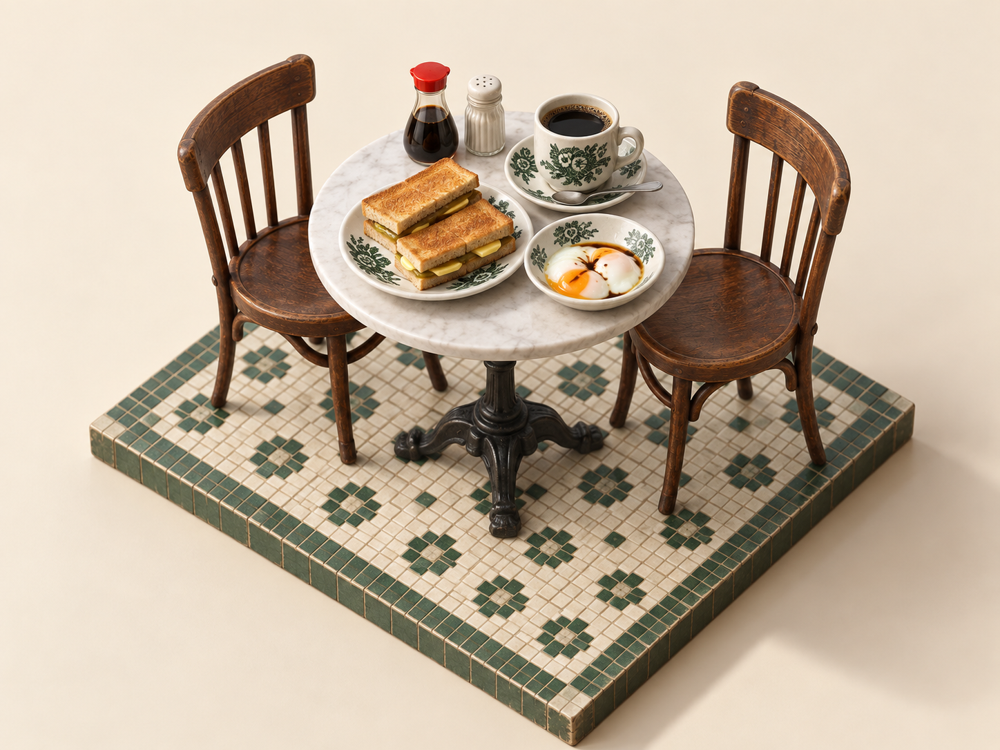

The kaya toast
Golden toast surrounds a layer of kaya and butter. The cut edges let you see what is inside the sandwich.
ONE COUNTER · THREE FAMILIAR FAVOURITES
Choose a drink. Watch it pour.
Stir, explore, and learn the order.
Setting your glass on the counter…
A LITTLE KOPITIAM VOCABULARY
Gah dai = sweeter · Po = weaker · Ta bao = takeaway. Kosong usually asks for no added sugar; check each recipe’s note for condensed-milk versions. “No extra milk” Milo still contains milk ingredients in the powder.
南洋早餐 · AT THE BREAKFAST TABLE
Crack, pour, sprinkle.
A familiar Singapore breakfast, brought to life.
Setting the breakfast table…
Drag to turn · Scroll to zoom
Golden toast surrounds a layer of kaya and butter. The cut edges let you see what is inside the sandwich.
The whites spread into the bowl while the yolks stay soft. Soya sauce and pepper settle across the surface.

Inspired by your supplied illustration. Animation and portions are stylised; this is not a cooking-time guide.

Reference images are available for Kopi and Teh. The 35 orders combine your Kopi, Teh and Milo guides in one interactive counter.
Blue water and separated layers make ingredients easier to see. Real drinks mix together. Quantities, displacement and motion are educational illustrations, not official recipes or fluid simulations.
Independent educational project. Reference artwork belongs to its respective owners. Not affiliated with Naumi, Ya Kun or Nestlé; MILO is a Nestlé trademark.